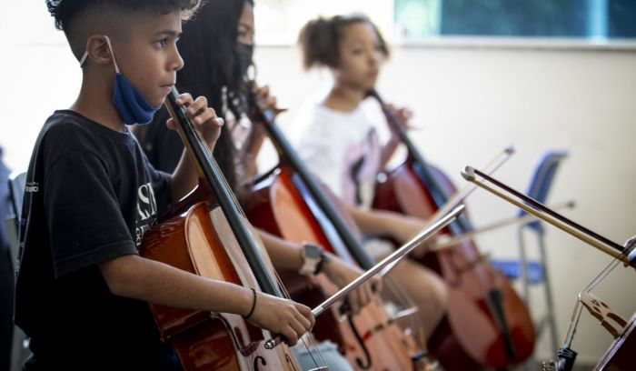

NOTÍCIAS RECENTES
Projeto leva música clássica de graça para cidades do interior

O projeto “Circulação de Concertos Francis David Vidal Ensemble” que depois de cinco anos de existência, tocando apenas em Três Lagoas e entorno, agora, consegue dar um passo maior, levando cultura para outras cidade.
A turnê da camerata inicia em Três Lagoas na próxima sexta-feira (21 de abril). No dia seguinte, sábado (22) os artistas seguem para Água Clara e no domingo (23) chegam em Ribas do Rio Pardo para o terceiro concerto. No começo do próximo mês, será um trabalho intenso, com muitos quilômetros rodados, para apresentações em Miranda, Paranaíba e Aparecida do Taboado, nos dias 5, 7 e 13 de maio, respectivamente.
Formado por 13 artistas e toda uma equipe técnica nos bastidores, o projeto leva música para lugares nada convencionais, para que pessoas que nunca pisaram em uma sala de concerto possa sentir o prazer de ouvir sons eruditos, como explica o maestro e proponente do projeto, Francis Vidal.
A turnê da camerata inicia em Três Lagoas na próxima sexta-feira (21 de abril). No dia seguinte, sábado (22) os artistas seguem para Água Clara e no domingo (23) chegam em Ribas do Rio Pardo para o terceiro concerto. No começo do próximo mês, será um trabalho intenso, com muitos quilômetros rodados, para apresentações em Miranda, Paranaíba e Aparecida do Taboado, nos dias 5, 7 e 13 de maio, respectivamente.
Formado por 13 artistas e toda uma equipe técnica nos bastidores, o projeto leva música para lugares nada convencionais, para que pessoas que nunca pisaram em uma sala de concerto possa sentir o prazer de ouvir sons eruditos, como explica o maestro e proponente do projeto, Francis Vidal.
“Spalla”

O primeiro violinista de uma orquestra é chamado de “Spalla”. Depois do maestro, o spalla é a figura mais importante, orientando o grupo sobre a afinação e as indicações do maestro.
Um padrão?

De acordo com estudiosos, uma das principais características da forma clássica é que ela se desenvolve procurando manter um certo padrão do começo ao final. A música popular, em contrapartida, possui o formato mais livre.